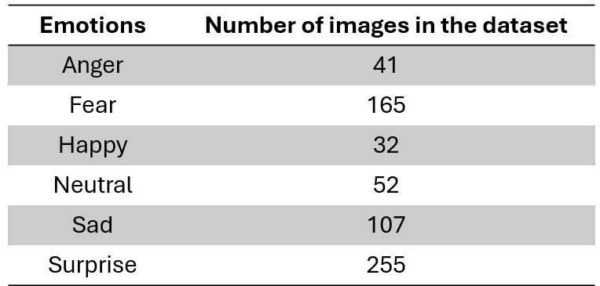
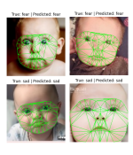
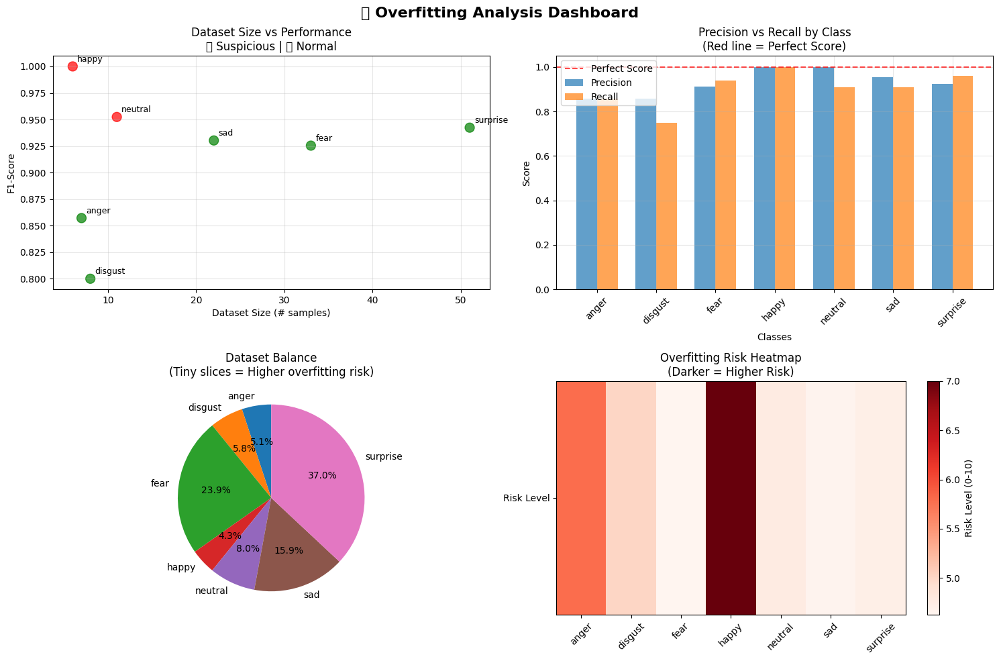
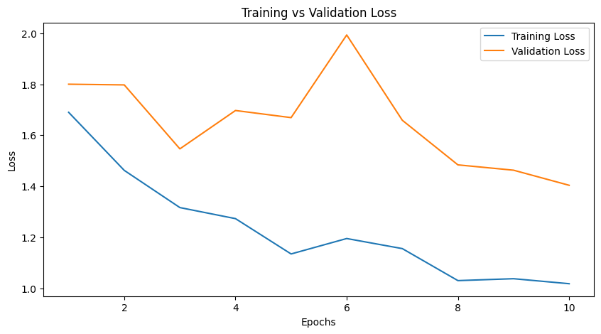
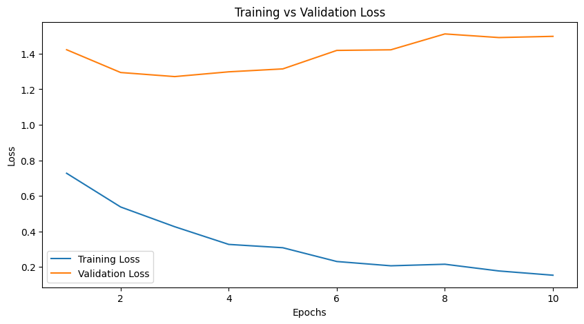

Project Overview
The iFACE project is part of the broader CUBE-SD research program and aims to improve the automated recognition of infant facial expressions.
The aim of this project is to develop an open-source and freely available tool for the automatic recognition of infant facial expressions across seven categories: happiness, anger, disgust, surprise, fear, sadness, and neutral.
This project stems from the observation that, although behavioural indicators of surprise are relatively easy to identify in standard screen-based violation-of-expectation paradigms, they are much more difficult to assess in social contexts such as social learning. In such situations, infants may look in different directions, making gaze-based measures harder to interpret. See this preprint for a more detailed discussion of why better tools are needed to characterise surprise in social contexts.
A central motivation of the project is that most facial-expression recognition systems were originally developed for adults, whereas infant faces differ in morphology, proportions, and expression dynamics. iFACE therefore explores methods that are both technically effective and scientifically interpretable.
The current implementation relies primarily on a convolutional neural network for image classification. Rather than training a model from scratch, we leveraged a pre-trained ResNet18 architecture, originally trained on large-scale image recognition datasets, and fine-tuned it on infant facial expression data. In parallel, exploratory work using facial landmarks and Delaunay triangulation is conducted to provide a more interpretable representation of infant facial geometry.
The current version of the algorithm is based on the dataset developed by Webb et al. (2017).
The main libraries used in the current pipeline include PyTorch, OpenCV, and face_alignment. The results presented here remain preliminary, and the algorithm still requires further development and validation.
The source code is not yet publicly available, as it is intended to be released alongside the associated publication. However, if you are interested in contributing to the project, you are very welcome to get in touch. Depending on the nature and extent of the contribution, collaborators may be acknowledged or included as co-authors on future outputs.
Model training was conducted on a high-performance workstation equipped with an Intel Core i9-14900HX CPU (24 cores, 32 threads) and an NVIDIA GeForce RTX 4060 Laptop GPU (8 GB VRAM). This configuration supports efficient deep learning training for medium-scale models and computer vision tasks.
Methods
The current workflow starts from an infant facial-expression image dataset organised into seven emotional categories: anger, disgust, fear, happy, neutral, sad, and surprise.
1. Dataset organisation
Images are stored by emotion class and loaded through a custom PyTorch dataset. This dataset class is responsible for reading the images, assigning labels from the folder structure, and preparing them for training.
The model therefore learns from labelled infant-face images rather than from manually entered features only.
2. Train / validation split
The main training procedure uses an 80% / 20% split between training and validation data. When possible, the split is performed with stratification so that class proportions are preserved across subsets.
- Training set: used to update model weights
- Validation set: used to evaluate generalisation
3. Image preprocessing and augmentation
Before entering the model, images are resized and normalised. During training, several augmentation steps are used to improve robustness, including horizontal flipping, small rotations, and brightness / contrast jitter.
These transformations are intended to reduce overfitting and help the classifier handle modest visual variability.
4. Main classifier
The core model is based on a pre-trained ResNet18, adapted for seven-way infant expression classification. Using a pre-trained network allows the system to start from visual features learned on large image datasets and then specialise them for the infant-expression task.

Training configuration
The notebook defines a training procedure using configurable hyperparameters such as batch size, number of epochs, and learning rate. The batch size is automatically adjusted depending on whether a GPU is available.
GPU compatibility
The pipeline is explicitly designed to run on either GPU or CPU. When CUDA is available, the model and tensors are moved to the GPU to speed up optimisation and allow larger batches.
Exploratory multi-task extension
The notebook also includes a multi-task version intended to predict both emotion categories and Action Units (AUs). In its current form, this section is best understood as exploratory development rather than as a fully validated final model.
Landmark-based extension
A separate methodological branch investigates facial landmarks and Delaunay triangulation to build a more geometric and interpretable representation of infant faces. This extension is conceptually important because it may help identify which facial regions contribute most to the classification process.
Why landmarks and triangulation were introduced
The main CNN can classify images directly from pixels, but it does not by itself provide a transparent facial geometry. The landmark-based extension was therefore introduced to better characterise facial structure, support interpretability, and explore whether infant-specific geometric information could improve performance or help explain classification errors.
Results and Pipeline Evolution
The figures below illustrate the progressive development of the iFACE pipeline: initial image-based classification, examination of confusion patterns, checks for overfitting, and later work on landmark-guided facial representation.
Landmarking and geometric representation


Initial classification stage


Overfitting assessment



In the first stage, the model starts from a pre-trained visual backbone and learns to separate infant facial expressions using a task-specific classification layer. This is a common transfer-learning strategy: the system keeps previously learned visual knowledge while adapting the final decision layer to the new emotion labels.

In the second stage, the optimisation can be extended to more of the network so that the visual representation itself becomes better adapted to infant faces. This stage is important because infant morphology differs from adult faces, and a more specific representation may improve classification while still requiring careful monitoring for overfitting.
Refined stage after adjustment


Main strength
The project already demonstrates that infant facial expressions can be approached with a transfer-learning pipeline based on a modern CNN architecture, rather than relying only on adult-oriented tools.
Main challenge
The classification problem remains difficult because several infant expressions share partially overlapping facial cues. This makes confusion analysis just as important as global accuracy.
What the figures really show
The material documents an iterative research process: build a model, evaluate errors, inspect possible overfitting, test refinements, and develop more interpretable facial representations.
Current stage of the project
iFACE should be understood as a promising but still developing infant-specific emotion-recognition framework. Its value lies both in current performance and in the methodological tools it is building for future improvement.
Contribute
We welcome contributions to the iFACE project. Contributions may include improving the codebase, discussing infant-adapted facial descriptors, helping with annotation strategies, or contributing to more robust and transparent model evaluation.
The project may be of particular interest to researchers working on infant development, affective computing, computer vision, facial landmarks, reproducible research, and interpretable machine learning.
For more information, please contact: romain.di-stasi@outlook.com.